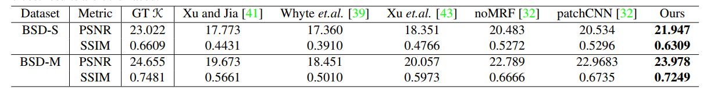
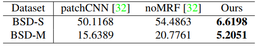
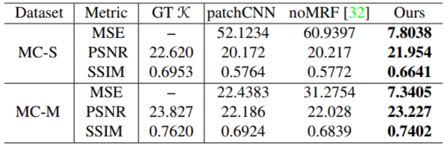
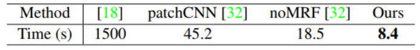
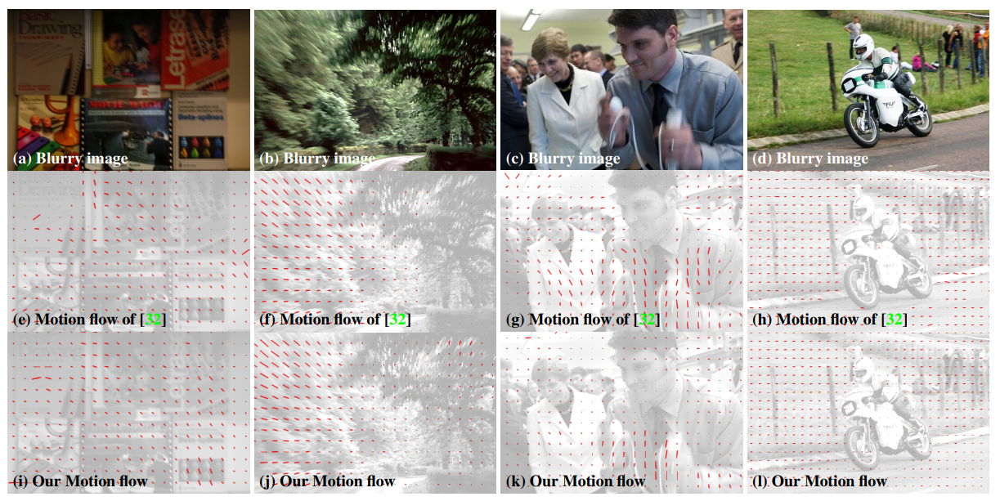
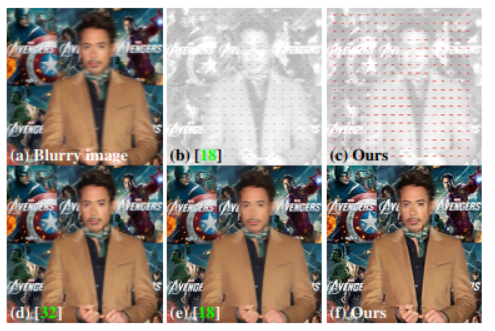
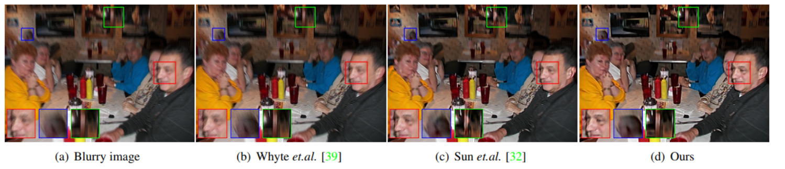
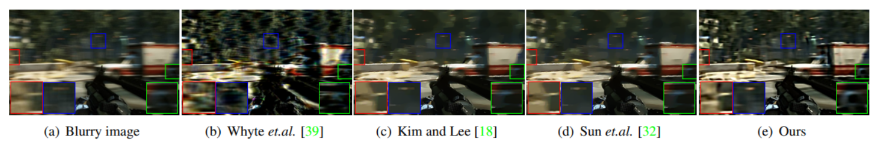
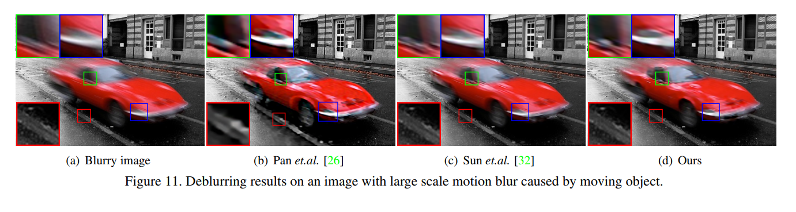

Experiments¶
5. Experiments
Das Modell auf Basis von Caffe implementiert und es wird durch stochastischen Gradientenabstieg mit Impuls und Batch Größe 1 trainiert. Im Training mit dem auf BSD simulierten Datensatz wird eine Lernrate von \(10^{− 9}\) und eine Schrittweite von \(2 × 10^5\) verwendet. Das Training konvergiert nach 65 Epochen.
5.1. Datensätze und Bewertungsmetriken
Es werden die Experimente an synthetischen
Datensätzen und Datensätzen von realen Bildern durchgeführt. Da ein Ground-Truth-Motionflow und ein scharfes Bild von einem echten verschwommenen Bild schwer zu erhalten sind. Um eine allgemeine quantitative Bewertung durchzuführen
werden zunächst zwei synthetische Datensätze generiert, die beide 300 unscharfe Bilder enthalten, mit 100 zufälligen scharfen Bildern
aus dem \(BSD500\)-Datensatz und 3 verschiedenen Motion-Flow-Maps
für jedes scharfe Bild. Beachte, dass keine zwei Motion-Flow-Maps gleich sind.
Simuliert wird der Motion-Flow mit \(umax = vmax = 36\),
dies ist das gleiche wie im Trainingsset. Aus Fairness gegenüber der
Methode noMRF Sun et. al. mit einem kleineren Ausgaberaum generieren wir auch relativ milde Motion-Flows für den zweiten Datensatz mit
\(umax = vmax = 17\). Diese beiden werden als \(BSD-S\) und
BSD-M bezeichnet. Darüber hinaus bewerten wir die Generalisierungsfähigkeit der vorgeschlagenen Methode anhand von zwei synthetischen
Datensätzen (MC-S und MC-M) mit 60 verschwommenen Bildern, generiert aus 20 scharfen Bildern von Microsoft COCO und
über der Einstellung für die Motion-Flow-Erzeugung.
Bewertungsmetriken Zur Bewertung der Genauigkeit des geschätzten Motion-Flows wird der mittleren quadratischen Fehler
(MSE) der Motion-Flow-Map gemessen. Insbesondere bei einem gegebenen geschätzten Motion-Flow \(M\) und dem Ground-Truth \(\kappa\) ist der \(MSE\)
definiert als \(\frac{1}{2|M|} \!\sum_{i,j}((U(i; j) − \hat U (i; j))^2 + ((V(i; j) −
\hat V (i; j))^2\), wobei \(|M|\) die Anzahl der Bewegungsvektoren bezeichnet
in \(M\). Zur Beurteilung der Bildqualität verwenden wir Peak
Signal-Rausch-Verhältnis \((PSNR)\) und struktureller Ähnlichkeitsindex
\((SSIM)\).
Text in Stichpunkten:
2 synthetische Datensätze (300 unscharfe Bilder enthalten, 100 zufällige scharfe Bilder)
Für die 100 zufälligen scharfen Bilder aus dem 𝐵𝑆𝐷500-Datensatz wurden pro Bild 3 verschiedene Motion-Flow-Maps simuliert
Simuliert wird der Motion-Flow im ersten Datensatz mit \(u_{max}=v_{max}=36\), BSD-S
Der zweite Datensatz mit \(u_{max}=v_{max}=17\), BSD-M
Datensätze (MC-S und MC-M) mit 60 verschwommenen Bildern, diese wurden generiert aus 20 scharfen Bildern von Microsoft COCO
Für die Bewertung der Genauigkeit des geschätzten Motion-Flows wird der mittlere quadratische Fehler (MSE) der Motion-Flow-Map gemessen
\(MSE\) definiert als:
\(|M|\) bezeichnet die Anzahl der Bewegungsvektoren in \(M\).
Zur Beurteilung der Bildqualität verwenden wir Peak Signal-Noise-Ratio \((PSNR)\), Verhältnis zwischen maximalen Signal und störendem Rauschen, und strukturellen Ähnlichkeitsindex \((SSIM)\), der die Ähnlichkeit von 2 Bildern misst
Tabelle 1
5.2. Auswertung der Motion-Flow-Schätzung
Wir vergleichen zunächst mit der Methode von Sun et.al.
(„patchCNN“), die einzige Methode mit verfügbarem Code zum Schätzen des Motion-Flows aus verschwommenen Bildern.
Diese Methode führt Training und Tests an kleinen Bildfeldern durch und verwendet MRF, um die Genauigkeit auf dem gesamten Bild zu verbessern.
Seine Version ohne MRF-Nachbearbeitung
(„noMRF“) wird auch verglichen, wobei die Soft-Max-Ausgabe
direkt verwendet wird um den Motion-Flow wie in unserer Methode zu erhalten. Tabelle 2 zeigt den durchschnittlichen \(MSE\) der geschätzten Motion-Flow-Maps auf allen Bildern in BSD-S und BSD-M. Bemerkenswert ist, dass auch ohne Nachbearbeitung wie \(MRF\) oder
\(CRF\) der Vergleich die hohe Qualität unserer geschätzten Motion-Flow-Maps zeigt. Darüber hinaus kann unsere Methode immer noch einen präzisen Motion-Flow
erzeugen auch bei schwierigeren BSD-S-Datensatz, auf dem die Genauigkeiten der Patch basierenden Methode noMRF Sun et. al. deutlich abnimmt. Wir zeigen auch ein Beispiel für den geschätzten Motion-Flow in Abbildung 6, die
zeigt, dass unser Ergebnis einen reibungslosen Motion-Flow beibehält
sehr ähnlich des Ground Truth, und die Methode von Sun et.al.
reagiert empfindlicher auf die Bildinhalte. Aus diesem Beispiel,
kann man sehen, dass die Methode von Sun et.al. im Allgemeinen die Motionvalues und erzeugte Fehler in der Nähe von
starken Kanten unterschätzt, vielleicht weil die Verarbeitung auf Patch-Ebene
durch die starken Kanten verwirrt ist und das Unschärfemuster
in einem größeren Bereich ignoriert.
Zum Vergleich mit anderen blinden Deblurring-Methoden von Xu und Jia, Xu et al. und Whyte et.al., die den Motion-Flow nicht schätzen, es wird direkt die Qualität des Bildes ausgewertet, das mit ihrem geschätzten Blur- Kernel wiederhergestellt wurde. Da die Nicht-blinde Dekonvolutionsmethode die Wiederherstellungsqualität einschränken kann, bewerten wir die gewonnenen Bilder unter Verwendung des Groundtruth-Motion-Flows als Referenz. Tabelle 1 zeigt die Durchschnitts Werte auf allen Bildern in jedem Datensatz, was zeigt, dass dieses Verfahren deutlich bessere Ergebnisse als die anderen liefert.
Text in Stichpunkten:
Verglichen wird mit der Sun et. al. Methode, die MRF(Marov Random Fields) verwendet
Sun ohne MRF-Nachbearbeitung („noMRF“) wird auch verglichen wobei die Soft-Max-Ausgabe direkt verwendet wird um den Motion-Flow wie in unserer Methode zu erhalten.
Tabelle 2 zeigt den durchschnittlichen \(MSE\) der geschätzten Motion-Flow-Maps auf allen Bildern in BSD-S und BSD-M.
auch ohne Nachbearbeitung wie \(MRF\) oder \(CRF\) zeigt der Vergleich die hohe Qualität unserer geschätzten Motion-Flow-Maps.
Für die blinden Deblurring-Methoden von Xu und Jia, Xu et al. und Whyte et.al., die den Motion-Flow nicht schätzen, wird direkt die Qualität des Bildes ausgewertet, das mit ihrem geschätzten Blur- Kernel wiederhergestellt wurde.
Da Nicht-blinde Deconvolution-Methode die Wiederherstellungsqualität einschränken kann, bewerten wir die gewonnenen Bilder unter Verwendung des Groundtruth-Motion-Flows als Referenz.
Tabelle 2
5.3. Bewertung der Generalisierungsfähigkeit
Um die Verallgemeinerungsfähigkeit unseres Ansatzes für unterschiedliche Bilder zu bewerten, verwenden wir die Datensätze auf Basis der Microsoft
COCO (d. h. MC-S und MC-M) zur Evaluierung unseres Modells, das
auf dem Datensatz basierend auf BSD500 trainiert wurde. Tabelle 3 zeigt
die Auswertung und den Vergleich mit dem „patchCNN“.
Die Ergebnisse zeigen, dass unsere Methode stabil Ergebnisse mit hoher Genauigkeit für beide Datensätze produziert. Dieses Experiment
legt nahe, dass die Verallgemeinerungsfähigkeit unseres Ansatzes sehr gut ist.
Text in Stichpunkten:
Microsoft COCO (d. h. MC-S und MC-M)
Experiment legt nahe, dass die Verallgemeinerungsfähigkeit unseres Ansatzes sehr gut ist.
Tabelle 3
5.4. Laufzeitauswertung
Wir führen einen Laufzeitvergleich mit den relevanten
Motion-Flow-Schätzungsmethoden durch. Durch Ausführen einer Bewegungsflussschätzung für 60 verschwommene Bilder mit Größen von etwa
640 × 480 auf einem PC mit NVIDIA GeForce 980 Grafikkarte und Intel Core i7 CPU. Für die Methode in gilt:
zitiert wird die Laufzeit aus dem Paper. Beachten Sie, dass sowohl die
Methode von Sun et.al. und diese Methode die GPU verwendet, um die
Berechnungen durchzuführen. Wie in Tabelle 4 gezeigt, braucht die Methode in
sehr lange Zeit aufgrund des iterativen Optimierungsschemas. Unsere
Methode dauert weniger als 10 Sekunden, was effizienter ist
als andere. Die Methode patchCNN benötigt mehr Zeit
weil viele Nachbearbeitungsschritte erforderlich sind.
Text in Stichpunkten:
Bewegungsflussschätzung für 60 verschwommene Bilder mit Größen von etwa 640 × 480 auf einem PC mit NVIDIA GeForce 980 Grafikkarte und Intel Core i7 CPU.
patchCNN(Sun Methode mit MRF) benötigt mehr Zeit weil viele Nachbearbeitungsschritte erforderlich sind.
Da Sun et.al. und unsere Methode die GPU verwendet, um die Berechnungen durchzuführen.
Wie in Tabelle 4 gezeigt, braucht die Methode Kim und Lee sehr lange Zeit aufgrund des iterativen Optimierungsschemas.
Tabelle 4
5.5. Auswertung an realen Bildern
Da die Ground-Truth-Bilder von realen verschwommenen Bildern nicht verfügbar sind, präsentieren wir nur die visuelle Bewertung
und Vergleich mit mehreren modernen Methoden für
räumlich variierende Unschärfeentfernung.
Wir vergleichen zunächst die
vorgeschlagene Methode mit der Methode von Sun et.al. zur Motion-Flow-Schätzung. Vier Beispiele sind in Abbildung 7 dargestellt.
Da das Verfahren von Sun et.al. auf lokalen Patches durchgeführt wird,
werden ihre Motion-Flow-komponenten oft falsch eingeschätzt, insbesondere wenn das Unschärfemuster in einem kleinen lokalen Bereich subtil oder verwirrend ist, wie beispielsweise in Bereichen mit geringer Beleuchtung oder Texturen. Dank des universellen End-to-End-Mappings können unsere
Methoden natürlichere Ergebnisse mit glattem Fluss erzeugen
und weniger Unordnung. Obwohl wir unser Modell auf Datensätzen trainieren
mit nur sanft variierenden Motion-Flows, verglichen mit
noMRF Sun et.al. kann unsere Methode bessere Ergebnisse bei Bildern mit
bewegtem Objekt liefern.
Vergleich mit der Methode Kim et.al. Bei Kim et. al. verwenden sie
ein ähnliches heterogenes Bewegungsunschärfemodell wie unseres und
schätzen auch den Motion-Flow zum Entschärfen. Weil ihr Code
nicht verfügbar ist, führen wir direkt einen Vergleich mit ihren realen Daten durch. Abbildung 8 zeigt die Ergebnisse an einem Beispiel. Verglichen mit den Ergebnissen von Kim und Lee ist spiegelt unser Bewegungsfluss das komplexe Unschärfemuster genauer wider, und unser
wiederhergestelltes Bild enthält mehr Details und weniger Artefakte.
Text in Stichpunkten:
Da die Ground-Truth-Bilder von realen verschwommenen Bildern nicht verfügbar sind, präsentieren wir nur die visuelle Bewertung und vergleichen mit mehreren modernen Methoden für räumlich variierende Unschärfeentfernung.
Da das Verfahren von Sun et.al. auf lokalen Patches durchgeführt wird, werden ihre Motion-Flow-komponenten oft falsch eingeschätzt,insbesondere wenn das Unschärfemuster in einem kleinen lokalen Bereich subtil oder verwirrend ist, wie beispielsweise in Bereichen mit geringer Beleuchtung oder Texturen
Mit universellen End-to-End-Mappings können unsere Methoden natürlichere Ergebnisse mit glatter Motion-Flow-Schätzung erzeugen und weniger Unordnung.
Im Vegleich mit noMRF Sun et.al. kann unsere Methode bessere Ergebnisse bei Bildern mit bewegtem Objekt liefern
Abbildung 8 zeigt die Ergebnisse an einem Beispiel. Verglichen mit den Ergebnissen von Kim und Lee spiegelt unser Motion-Flow das komplexe Unschärfemuster genauer wider, und unser wiederhergestelltes Bild enthält mehr Details und weniger Artefakte
Abbildung 7
Abbildung 8
Bilder mit Kamerabewegungsunschärfe Abbildung 9 zeigt ein Beispiel mit Unschärfe, die hauptsächlich durch die Kamerabewegung verursacht wird.
Das unscharfe Bild, das von der ungleichmäßigen Kameraschütteln erzeugt wird.
Die Shake-Deblurring-Methode Whyte et.al. leidet unter starker Unschärfe, da ihr Modell die Unschärfe ignoriert, die durch große Vorwärtsbewegungen verursacht wird
. Verglichen mit dem Ergebnis von Sun et.al., liefert unsere
Methode ein schärferes Ergebnis mit mehr Details und weniger
Artefakte.
Bilder mit Objektbewegungsunschärfe Wir evaluieren unsere Methode
auf Bildern mit Objektbewegungsunschärfe. In Abbildung 10
enthält das Ergebnis von Whyte et.al. starke Ringing-Artefakte aufgrund der Objektbewegung. Unsere Methode kann mit
starker Unschärfe im Hintergrund umgehen und erzeugt ein natürlicheres
Bild. Wir vergleichen weiter mit dem segmentierungsbasierten
Entschärfeverfahren von Pan et.al. auf einem Bild mit großem
Skalenunschärfe durch bewegte Objekte auf statischem Hintergrund.
Wie in Abbildung 11 gezeigt, ist das Ergebnis von Sun et.al. aufgrund der Unterschätzung des Motion-Flows zu glatt. In dem
Ergebnis von Pan et.al. einige Details aufgrund der
Segmentierungsfehler verloren gehen. Unsere vorgeschlagene Methode kann die
Details auf unscharfem, sich bewegendem Vordergrund wiederherstellen und behält die Schärfe im Hintergrund wie im Original.
Text in Stichpunkten:
Abbildung 9 zeigt ein Beispiel mit Unschärfe, die hauptsächlich durch die Kamerabewegung verursacht wird
Whyte et.al. leidet unter starker Unschärfe, da ihr Modell die Unschärfe ignoriert, die durch große Vorwärtsbewegungen verursacht wird
Unsere Methode liefert ein schärferes Ergebnis mit mehr Details und weniger Artefakte
Wir evaluieren unsere Methode auf Bildern mit Objektbewegungsunschärfe
In Abbildung 10 enthält das Ergebnis von Whyte et.al. starke Ringing-Artefakte aufgrund der Objektbewegung. Unsere Methode kann mit
starker Unschärfe im Hintergrund umgehen und erzeugt ein natürlicheres Bild
Wir vergleichen weiter mit dem segmentierungsbasierten Entschärfeverfahren von Pan et.al. auf einem Bild mit großem Skalenunschärfe durch bewegte Objekte auf statischem Hintergrund
Wie in Abbildung 11 gezeigt, ist das Ergebnis von Sun et.al. aufgrund der Unterschätzung des Motion-Flows zu glatt.einige Details gehen aufgrund der Segmentierungsfehler verloren
Unsere Methode kann Details auf unscharfem, sich bewegendem Vordergrund wiederherstellen und behält die Schärfe im Hintergrund wie im Original
Abbildung 9
Abbildung 10
Abbildung 11
Fazit¶
6. Fazit
In diesem Papier wird ein flexibles und effizientes Deep
Learning Verfahren zum Schätzen und Entfernen der heterogenen Bewegungsunschärfe vorgestellt. Durch die Darstellung der heterogenen
Bewegungsunschärfe als pixelweise lineare Bewegungsunschärfe. Die vorgeschlagene
Methode verwendet ein FCN, um eine dichte Motion-Flow-Map zum Entfernen von Unschärfen zu schätzen
. Außerdem werden automatisch
Trainingsdaten mit simulierten Motion-Flow-Maps für das Training
des FCN generiert. Experimentelle Ergebnisse sowohl von synthetischen als auch realen Daten zeigen die Exzellenz der vorgeschlagenen Methode.